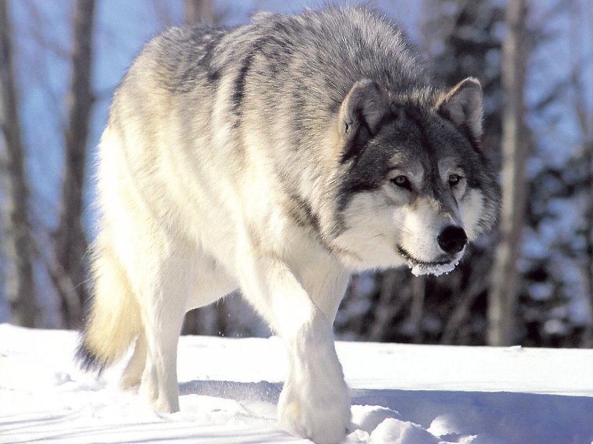

EL LOBO
04 de Junio de 2018 19:05 por Adrian Ponce
El lobo (Canis lupus) es una especie de mamífero placentario del orden de los carnívoros. El perro doméstico (Canis lupus familiaris) se considera miembro de la misma especie según distintos indicios, la secuencia del ADN y otros estudios genéticos. El primer registro fósil data de hace 800.000 años. Los lobos fueron antaño abundantes y se distribuían por Norteamérica, Eurasia y el Oriente Medio. Actualmente, por una serie de razones relacionadas con el hombre, incluyendo el muy extendido hábito de la caza, los lobos habitan únicamente en una muy limitada porción del que antes fue su territorio. Aunque está clasificada como una especie poco amenazada para su extinción, en algunas regiones, incluyendo la parte continental de los Estados Unidos de América, la especie está listada como en peligro o amenazada. Los lobos son cazados en muchas áreas del mundo por la amenaza que representan para el ganado, así como por deporte.